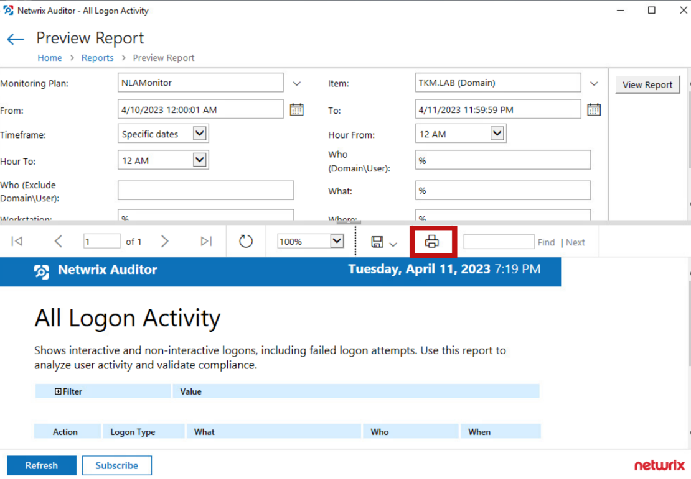

Symptoms
-
In Netwrix Auditor v10.5, the Export icon is active, but Auditor does not export the report when you click and select the report format (Word, Excel, PDF, PowerPoint, TIFF file, MHTML).
-
In Netwrix Auditor v10.6 and v10.7, the Export icon is missing.
Cause
Internet Explorer is not installed on the affected server.
Resolutions
NOTE: In Netwrix Auditor v10.8, you are able to export reports without Internet Explorer installed.
Refer to the following options to save the report:
-
Verify that another browser is installed on your server.
-
Export the report via Report Manager.
IMPORTANT: A non-gMSA account with the Content Manager role is required to access SSRS. Refer to the following article for additional information: Requirements — SQL Server Reporting Services · v10.7.
-
In Auditor, navigate to Settings > Audit Database.
-
Click the Report Manager URL, locate the required report, and export it.
-
-
Export the PDF version using the Print feature.
-
In Auditor, navigate to the Reports menu and run a report.
-
Click the Print icon, select the appropriate format, and click Print.
 -
Proceed with the further steps to save the report.
-